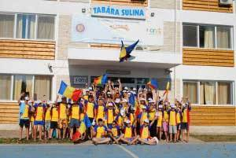

În această lună august, însemnată de grave incertitudini politice, la care se adaugă canicula și seceta care au pus la grea încercare agricultura noastră, iată, din Istria, ne sosește și o veste bună: străbătând o distanță foarte lungă, cu autobuze și trenuri, a sosit un grup de copii istroromâni din Sușnievița, invitați la mare și în Delta Dunării de către Departamentul pentru Românii de Pretutindeni.
 Astfel, un grup de cinci copii din satul Sușnievița, care învață la școala medie din Cepici, au sosit la 6 august la Tulcea, de unde au mers la Sulina și au văzut și Marea Neagră, rămânând la noi în țară până la 13 august; ei erau însoțiți de domnișoara învățătoare Davorka și de domnul profesor Dean Nestorovich, precum și de mama unei eleve din grup, doamna Loredana Travaglia, mama Silviei Travaglia, o elevă care s-a distins la învățătură și a participat la toate spectacolele școlii, recitând poezii în dialectul strămoșesc istroromân.
Ei au trecut în drumul lor și prin București, și s-au întors la Sușnievița în ziua de Sântă Marie, la 15 august, entuziasmați cu toții, inclusiv cei mari ce i-au însoțit, de frumusețea țării noastre și de căldura sinceră, dragostea cu care au fost întâmpinați, care nu au fost cu nimic știrbite de greutățile inerente drumului lung, pe timp de vară, pe care l-au parcurs. Am constatat personal entuziasmul lor și admirația cu care vorbeau de țară, chiar dacă marea Adriatică și coasta, nu numai a Istriei -cu renumitele ei stațiuni, ca Opatia (Abbazia) la care venea și regina noastră Carmen Sylva, în primii ani ai secolului trecut-, dar și coasta Dalmației, sunt printre cele mai frumoase din lume.
Entuziasmul sincer al acestor copii, precum și al adulților care i-au însoțit, sunt cea mai bună carte de vizită a țării noastre, cea mai bună diplomație și politică culturală, datorate, în cea mai mare parte, Dlui. Ambasador Cosmin Dinescu, care, pentru prima dată în istoria diplomației noastre în Croația, ia contact personal cu Istroromânii, ca de pildă, printre alte exemple, în acest an, vineri 29 iunie, când a invitat comunitatea istroromână la un dialog liber, la o cină la principalul restaurant din localitatea Vranjie, desfășurată într-o atmosferă sărbătorească, cu participarea a circa 30 de membri ai comunității istroromâne.
Încheiem această relatare, evidențiind încă odată entuziasmul acestor primi copii și însoțitori ai lor, de la școala din Sușnievița și din Cepici, care vin în România, precum și regretul acelora, care deși invitați, nu au venit, dar în mod sigur, ascultându-i pe prietenii lor, care au dat curs invitației unei vacanțe pe litoral în România, vor veni cu siguranță în anul viitor. Ne rezervăm să revenim, în măsura posibilităților, cu fotografii făcute de participanții la această excursie.
Un reportaj de Emil Petru Rațiu
August 29, 2012
© 2012 Romanian Global News